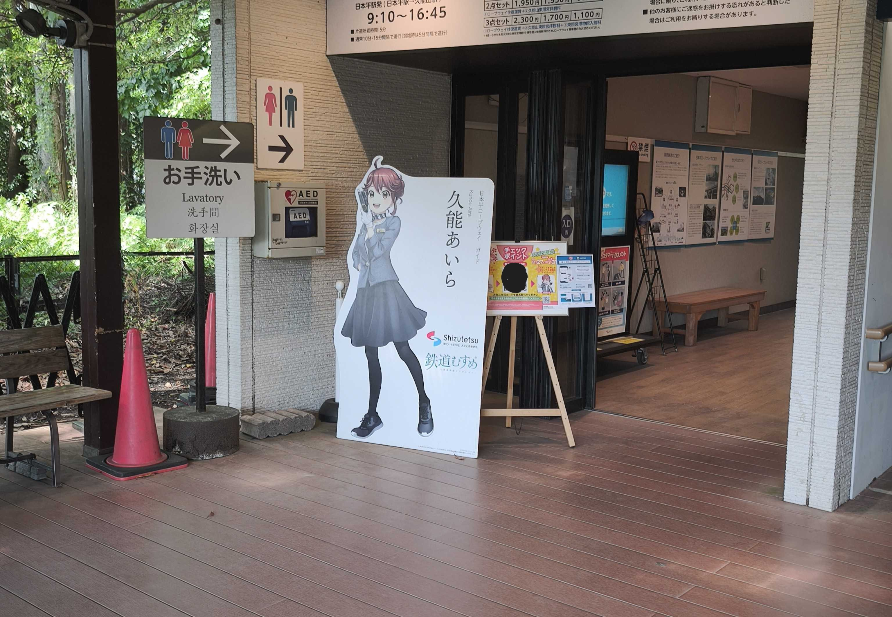
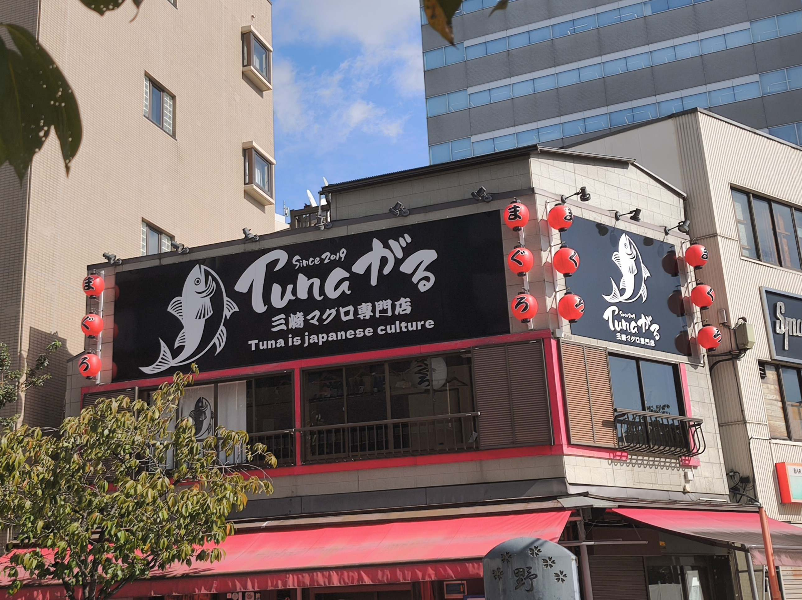
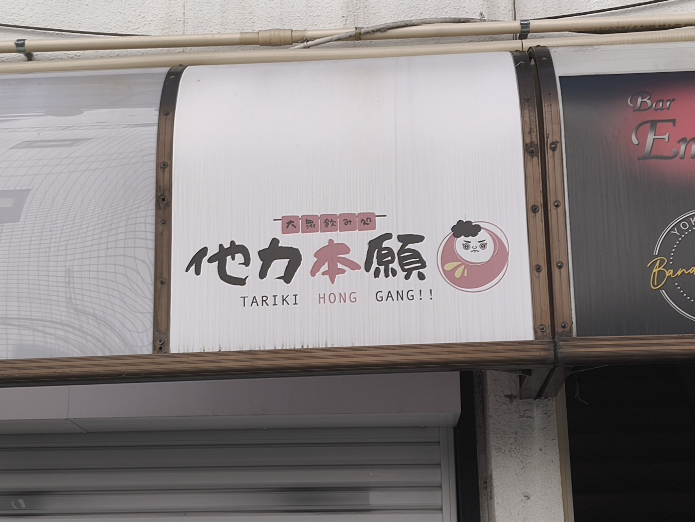

路上観察
2026/10/17 静岡県静岡市 本人撮影

鉄道むすめ日本平ロープウェイガイド久能あいらの立て看板。
今までの旅行を振り返ると、観光地には大抵こうしたキャラクターがいたなと思い、記念に撮影。
2026/10/19 神奈川県横浜市 本人撮影

三崎マグロ専門店Tunaがるの看板。
Tunaと繋がるをかけたダジャレと店名で、お店の雰囲気が良さそうだと思った。
2026/10/19 神奈川県横浜市 本人撮影

大衆飲み処他力本願の看板。
どういう経緯でこの店名にしたのか気になった上に、よく見ると下のアルファベットで書いてある店名が中国語っぽい綴りで、
場所が横浜なこともあり中国料理が頼めそうだと想像した。